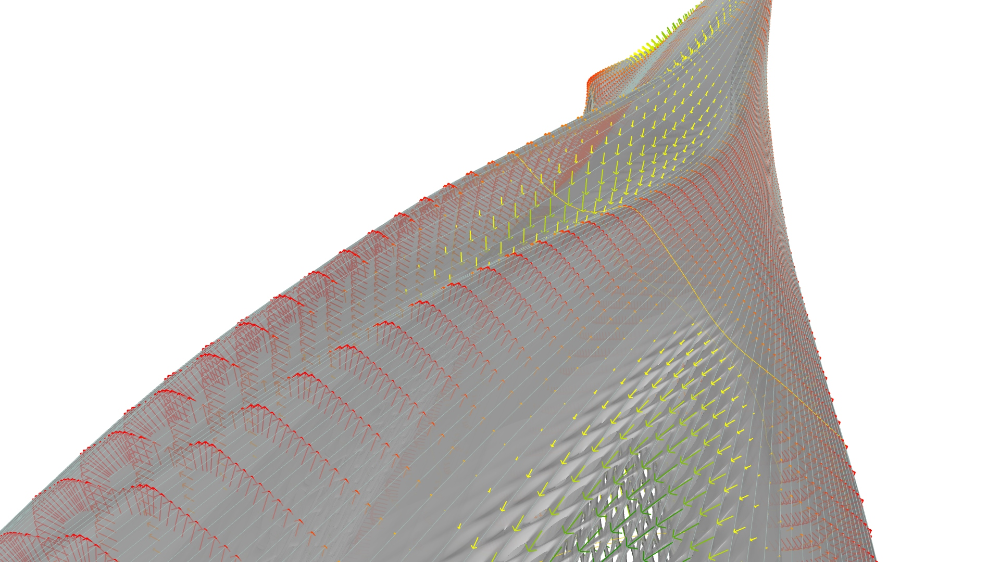
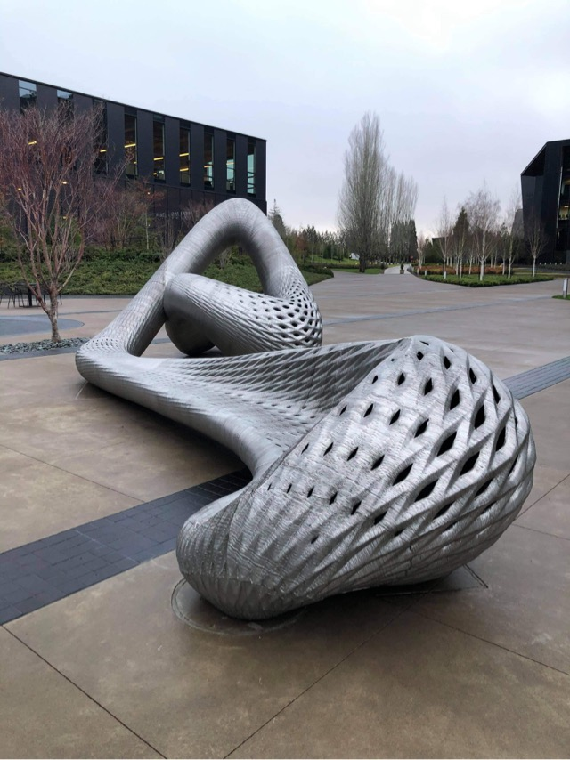

Employment at
Joris Laarman Studio
2015-2021, Amsterdam

As a computational design specialist at Joris Laarman Studio, I created the parametric 3D designs for multiple objects manufactured by MX3D through Wire Arc Additive Manufacturing (WAAM). The technique was initially developed by MX3D and Joris Laarman Studio for the Dragon Bench series, several editions of which I contributed to by optimising the stainless steel lattice distribution.

The most notable demonstrator for this technique was the MX3D Bridge - a 12-metre long pedestrian bridge placed in De Wallen, Amsterdam, between the years 2021 and 2023. Advancing through multiple design increments, I developed the procedural model for it based on sketches by Joris Laarman and structural shape-finding input by the engineering partners, Arup. The model provided data for the architectural planning, structural analysis, fabrication, assembly and presentation - from the early concept phases to the final realisation and subsequent structural monitoring.


While the carrying beams of the bridge were following key stress lines emerging in the S-shaped envelope, the handrail was conceived as a continuous double-layered surface that thickens in critical structural regions and gradually opens up in a grid of apertures between these regions. This confers an organic tissue-like quality against the preconception of rigidity of stainless steel.

This structural logic was later implemented in other large-scale architectural demonstrators, such as the Gradient Screen, exhibited at the Cooper Hewitt, Smithsonian Design Museum. This sculptural work envisioned an architectural skin as a seamless morphing continuum, made possible by large-scale robotic 3D-printing. The double-layered profile was designed to form structural columns under the guise of textile-like creases.

This design language completed a full cycle with the design of the Oregon Dragon Bench, where the original thin lattice structure was replaced by a continuous morphing skin with local densifications and openings. The bench was placed at Nike’s World Headquarters in Oregon.